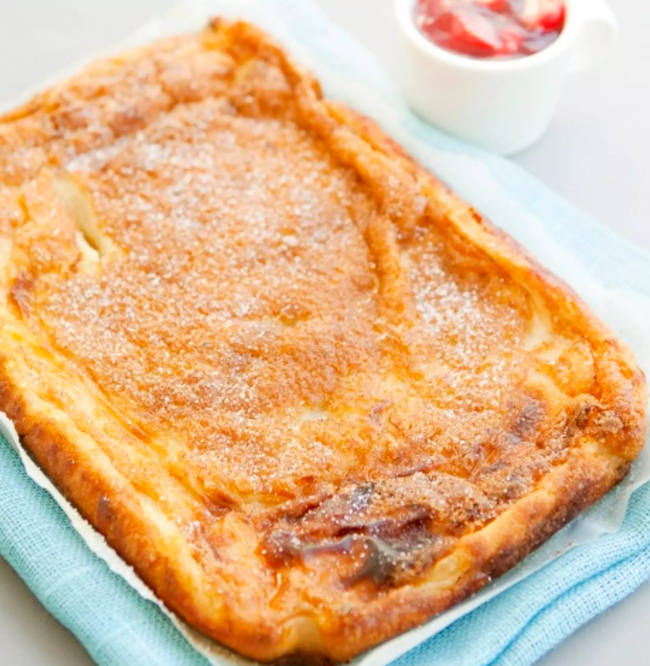

Ainekset

- 4 dl vehnäjauho
- 1 1/2 dl sokeria
- 1 tl suolaa
- 2 tl vanilijasokeria
- 1 tl leivinjauhetta
- 2 munaa
- 7 dl maitoa
- 75 g sulaa margariinia
Vehnäjauhoista osan voi korvata graham- tai sämpyläjauhoilla.
Sokeria voi käyttää vähemmänkin.
Margariinin tilalla voi käyttää öljyä. 1 dl oljyä painaa 90g.
Valmistus
- Sekoita vanilijasokeri ja leivinjauhe vehnäjauhoihin.
- Riko munat kulhoon ja sekoita niitä hieman.
- Lisää kulhoon n. puolet maidosta, suola, sokeri ja sekoita.
- Lisää kulhoon jauhot ja sekoita kunnolla.
- Lisää loppu maito.
- Anna taikinan olla kulhossa n. puoli tuntia.
Ota syvä uunipelti. Laita leivinpaperi pellille tai taikina leivinpaperin päälle. Laita 255 asteiseen uuniin n. puoleksi tunniksi paistumaan.